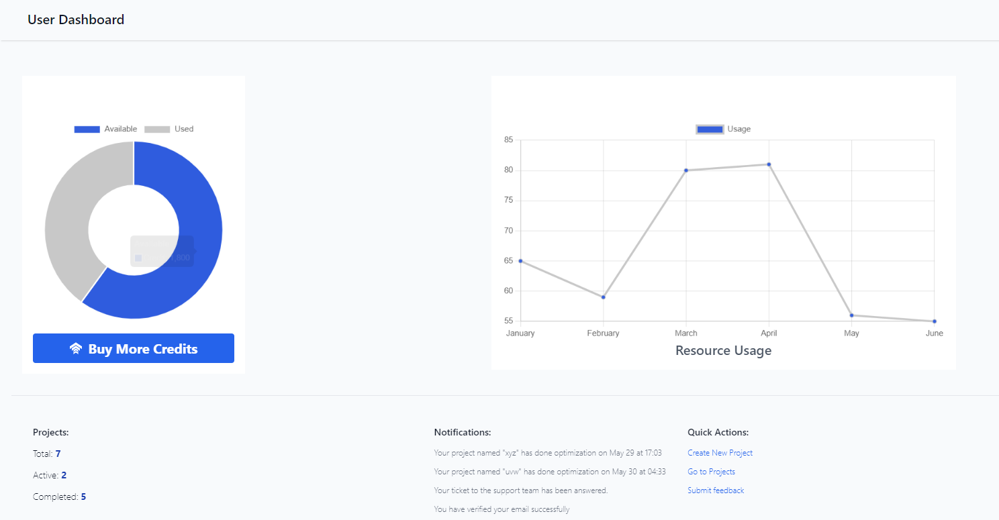

Overview
The Dashboard is the central hub for users to access their projects, monitor resource usage, and manage their account settings. It provides a comprehensive overview of the user's activity and available resources, ensuring that they can efficiently navigate and utilize the platform's features.
Key Elements
Credits Section
-
Pie Chart: The pie chart visually represents the distribution of credits. The blue section indicates the available credits, while the gray section shows the used credits.
-
Buy More Credits: A button below the pie chart allows users to purchase additional credits if needed.
Resource Usage Section
- Line Graph: The line graph displays the resource usage trend over the past few months. Each point on the graph represents the resource consumption for a specific month, helping users identify periods of high or low usage.
Projects Overview Section
-
Total Projects: The total number of projects managed by the user.
-
Active Projects: The number of currently active projects.
-
Completed Projects: The number of projects that have been completed successfully.

Notifications and Quick Actions:
Notifications inform the user about project updates and other important alerts. Quick actions enable users to perform common tasks such as creating a new project, accessing existing projects, and submitting feedback.
-
Create New Project: A link to initiate a new project creation.
-
Go to Projects: A link to access the user's projects.
-
Submit Feedback: A link to provide feedback about the platform.